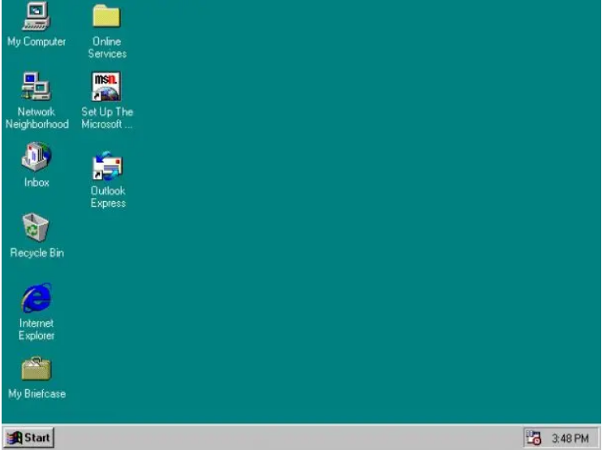
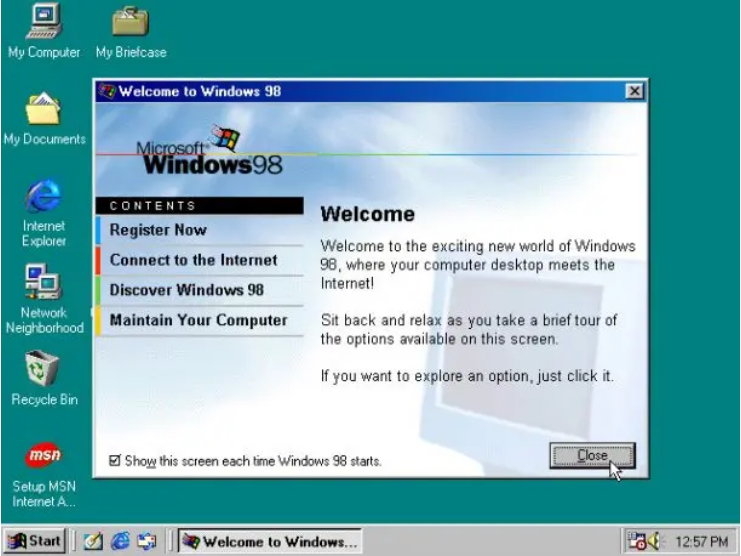
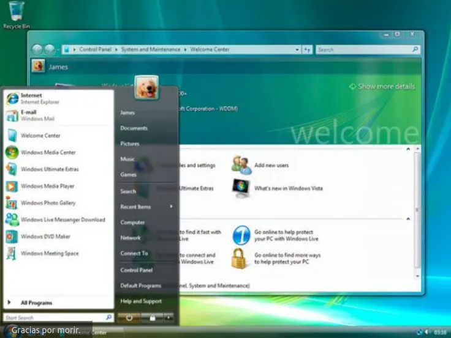
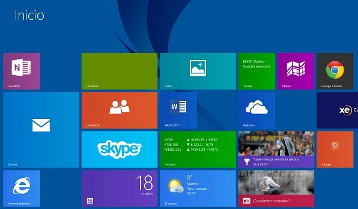

Windows¶

La primera versión de Microsoft Windows, versión 1.0, presentada en diciembre de 1985, compitió con el sistema operativo de Apple. Carecía de un cierto grado de funcionalidad y logró muy poca popularidad. Windows 1.0 no era un sistema operativo completo; más bien era una extensión gráfica de MS-DOS.

Windows versión 2.0 fue lanzado en noviembre de 1987 y fue un poco más popular que su predecesor. Windows 2.03 (lanzado en enero de 1988) incluyó por primera vez ventanas que podían solaparse unas a otras. El resultado de este cambio llevó a Apple a presentar una demanda contra Microsoft, debido a que infringían derechos de autor.
Windows 2.0 El primer panel de control

Windows versión 3.0, lanzado en 1990, fue la primera versión de Microsoft Windows que consiguió un amplio éxito comercial, vendiendo 2 millones de copias en los primeros seis meses. Presentaba mejoras en la interfaz de usuario y en la multitarea. Recibió un lavado de cara en Windows 3.1, que se hizo disponible para el público en general el 1 de marzo de 1992. El soporte de Windows 3.1 terminó el 31 de diciembre de 2001.
1990 Windows 3.0

El 24 de agosto de 1995, Microsoft lanzó Windows 95, acompañado por una extensa y millonaria campaña de marketing, Windows 95 fue un gran éxito en el mercado en el momento de su lanzamiento y en breve se convirtió en el sistema operativo de Escritorio más populares.
1995 Windows 95
El siguiente para la línea del usuario fue lanzado el 25 de junio de 1998, Microsoft Windows 98. Sustancialmente fue criticado por su lentitud y por su falta de fiabilidad en comparación con Windows 95, pero muchos de sus problemas básicos fueron posteriormente rectificados con el lanzamiento de Windows 98 Second Edition en 1999. El soporte estándar para Windows 98 terminó el 30 de junio de 2002, y el soporte ampliado para Windows 98 terminó el 11 de julio de 2006.
1998 Windows 98
Como parte de su línea «profesional», Microsoft lanzó Windows 2000 en febrero de 2000. La versión de consumidor tras Windows 98 fue Windows Me (Windows Millennium Edition). Lanzado en septiembre de 2000, Windows Me implementaba una serie de nuevas tecnologías para Microsoft: en particular fue el «Universal Plug and Play».
En octubre de 2001, Microsoft lanzó Windows XP, una versión que se construyó en el kernel de Windows NT que también conserva la usabilidad orientada al consumidor de Windows 95 y sus sucesores. En dos ediciones distintas, «Home» y «Professional», el primero carece en gran medida de la seguridad y características de red de la edición Professional. Además, la primera edición «Media Center» fue lanzada en 2002, con énfasis en el apoyo a la funcionalidad de DVD y TV, por lo que incluía grabación de TV y un control remoto. A principios de la década de los 2000, Windows se empezaba a posicionar cómo el innovador en el mercado, pero su posición fue en declive.
2001 WIndows XP

El 30 de enero de 2007, Microsoft lanzó Windows Vista. Contiene un sinnúmero de características nuevas, a partir de un shell rediseñado, y la interfaz de usuario ofrece importantes cambios técnicos de envergadura, con especial atención a las características de seguridad. Está disponible en seis ediciones diferentes.
2001 hasta el 2007 Windows Vista
El 22 de octubre de 2009, Microsoft lanzó Windows 7. A diferencia de su predecesor, Windows Vista, que introdujo a un gran número de nuevas características, Windows 7 pretendía ser una actualización incremental, enfocada a la línea de Windows, con el objetivo de ser compatible con aplicaciones y hardware con los que Windows Vista no era compatible. Windows 7 tiene soporte multi-touch, un Windows shell rediseñado con una nueva barra de tareas, conocido como Superbar, un sistema red llamado HomeGroup, y mejoras en el rendimiento sobre todo en velocidad y en menor consumo de recursos.
2009 Windows 7.

El 26 de octubre de 2012, Microsoft lanzó Windows 8. El mayor cambio introducido es el reemplazo del Menú Inicio por una pantalla de Inicio de tamaño completo, la cual incluye nuevas aplicaciones. Su uso está enfatizado para dispositivos con pantallas táctiles, aunque puede ser utilizado con ratón y teclado. Por primera vez desde Windows 95, el botón de Inicio desaparece de la barra de tareas. El escritorio presenta una nueva interfaz y el explorador de Windows incluye la apariencia «Ribbon» de Microsoft Office. Una actualización masiva del sistema, Windows 8.1, fue lanzada el 17 de octubre de 2013 con nuevas mejoras de personalización, rendimiento y un botón para la pantalla de inicio, cuya ausencia en Windows 8 fue criticada.
El 29 de julio de 2015, Microsoft lanzó Windows 10. Presenta un conjunto de aplicaciones y una interfaz que permite utilizarse en computadoras personales y dispositivos móviles. Visualmente es parecido a su predecesor, sin embargo, el Menú Inicio regresa en esta versión. Windows 10 introduce un nuevo navegador: Microsoft Edge, y un asistente de voz personal: Cortana. Se trata de un sistema que a diferencia de sus predecesores, lanzará actualizaciones masivas periódicamente para convertirse en un sistema de servicio. Hasta el 29 de julio de 2016, Microsoft ofreció gratuitamente una actualización a Windows 10 desde una PC con Windows 7 o Windows 8.1.
2015 Windows 10